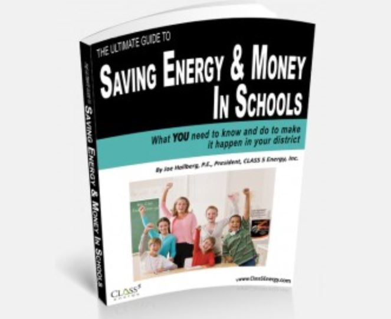
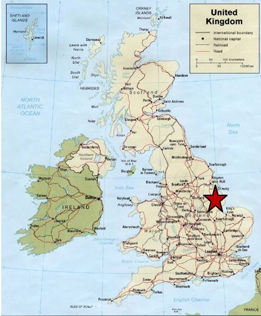
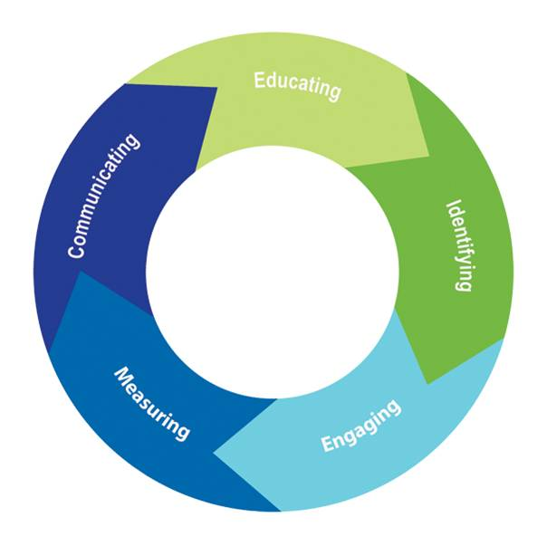
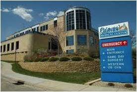

Tools Used
- Building Motivation Over Time
- Feedback
- Norm Appeals
- Overcoming Specific Barriers
- Prompts
- Neighbourhood Coaches and Block Leaders
Initiated By
- Class 5 Energy
- Case study authored by Karen Mann
Partners
- School districts, area hospitals
- Minnesota Department of Commerce
Results
- Over eight years in the program, Cambridge-Isanti Public School district reduced energy use per person by about 36% and saved $2.6 million in energy costs.
Webinar Transcript
Landmark Case Study
Class 5 Energy
This comprehensive, long-term approach combines education, training, behavior change and goal setting with progress tracking, recognition and continuous improvement to reduce energy use in schools, hospitals and other institutional settings.
Background
Note: To minimize site maintenance costs, all Tools of Change case studies are written in the past tense, even if they are ongoing programs, as is the case with this one.
CLASS 5 Energy, based in White Bear Lake, Minnesota, was established in 2002 as part of a consulting engineering firm that specialized in energy planning, behavioral energy programs, utility tracking, and energy efficiency resources
This case study involves two implementations that illustrate its energy reduction approach – one in a school setting, and the other in a healthcare setting.
School Setting: The school implementation involves Class 5 Energy’s Schools for Energy Efficiency (SEE) program, a behavior-based energy efficiency program offered to K-12 school districts. The original SEE program materials were developed in 2002 from a series of pilot programs in Minnesota school districts. The implementation discussed in this case study was carried out for the Cambridge-Isanti School District, located about an hour north of Minneapolis and St. Paul in Minnesota, USA.

Healthcare Setting: In 2010, Class 5 Energy received a grant from the Minnesota Department of Commerce to test its approach in the healthcare sector. After interviewing a number of appropriate pilot sites, it selected Ridgeview Medical Center in May 2011, based on Ridgeview’s previous sustainability efforts, enthusiasm for adding a behavioral component, and its diverse building mix.

State of Minnesota, USA Map courtesy of mapcruzin.com
Setting Objectives
The SEE Program recommended that school districts adopt the following objectives:
- A 10% energy reduction goal
- Development of an energy policy and a steering committee to implement the policy.
- ENERGY STAR® recognition for participating schools
- Health, safety and comfort levels should be maintained (e.g. students should not suffer intolerable heat or cold for the sake of energy reductions).
The purpose of the RMC pilot project was to adapt the existing SEE program to a healthcare setting and to assess how successful a hospital—a 24-7 environment—could be at reducing energy using only behavioural strategies and without major financial investment.
Getting Informed
Prioritizing Audiences
CLASS 5 Energy focused on two priority audiences:
- schools
- hospitals and other institutional settings
Identifying Barriers
While these two audiences had some distinct barriers, they also shared some. The primary barrier—for both the school and hospital programs—was overcoming cultural inertia.
"In each organization, culture is created and sustained by the people who live it. Changing that culture, changing those habits and creating new, better habits is hard," said CLASS 5 Energy's General Manager, Amy Anderson. "The goal of a behavior program is to change the culture of an organization to one in which saving energy is not something you do because you're told to, it’s something you do because you want to."
In addition, there were fears that the program meant "extra work." People felt they would be asked to do yet “one more thing.”
There was an additional key challenge in the healthcare sector - a mentality that all equipment needed to be on and ready to use 24/7. But the reality was that while some parts of the hospitals did work 24/7, the clinics generally did not. For example, if a certain doctor was only in a clinic two days a week, the equipment he or she used did not need to be on all the time. In a lot of cases the clinics had just left that equipment on because they didn’t ever want to be criticized for equipment not being ready for use when the doctor needed it.
Therefore, a note was developed that people could put on their doors that said, “I’m still here today, but I’m at a meeting.”
Therefore, part of this program’s formative research involved going into the clinics and some of the professional buildings and asking, “When does this equipment need to be on”? It also included a lot of testing about how long it took to re-start equipment that had been turned off.
Class 5 Energy continued to look for and address barriers throughout program implementation – not just during initial research and planning. “If we’re not seeing results”, said Anderson, “part of the program involves going back and finding out what is going on. You can guess, but you would be surprised at how many different reasons people have when things aren’t working. As well, it may be a question of how many solutions can be brought to the table to help overcome those barriers.”
Delivering the Program
All of CLASS 5 Energy's behavioural programs followed a five-step process:
- Educate people about why saving energy is important and how they can help.
- Identify opportunities for easy savings across the organization.
- Engage people and ask them to do their part in the energy saving effort.
- Measure and track progress toward the energy goal.
- Communicate and celebrate the results often and with everybody.

This process helped to overcome certain cultural barriers and create a "new normal." (Norm appeals, Overcoming specific barriers)
In addition, CLASS 5 Energy provided a structure for the overall energy saving effort, which included:
- Organization leadership (visible and vocal support from the highest levels of the organization)
- Energy coordinator (the person or people designated to coordinate the different aspects of the program) and an energy steering committee. The key function of the steering committee was to develop energy policies and procedures
- Representation from all the key areas of the organization (site leaders, departmental managers), and
- Peers who were willing to both talk and to “walk the talk” to demonstrate that energy conservation was a key choice in helping the organization achieve its mission and critical goals (Neighborhood coaches, block leaders and office reps).
Two versions of CLASS 5's energy behavioural program were designed, one for each priority audience. Within the broad program approach described above, each priority ayudience had its own tailored strategies and program materials.
Schools for Energy Efficiency (SEE)
In 2004, the school district in the Minnesota towns of Cambridge and Isanti was the first to sign on to the SEE program. The district initially had five schools and one administration building, but added two new school buildings in 2006 for a total square footage of about 900,000. The district served more than 5,000 students and had about 742 staff members.
The school superintendent was an enthusiastic supporter. He believed in the program and supported it verbally and in written communications, which helped to support the efforts of everyone in the district.
The district hired a part-time energy coordinator who worked with the district's buildings and grounds director. Together, they formed a steering committee, which included all department heads, kitchen and information technology (IT) staff, as well as principals and administrative staff.

CLASS 5 Energy worked to integrate the program into existing initiatives and responsibilities, to show that it involved little if any extra work. To further minimize the time required, it provided schools with a guidebook that had step-by-step planning tools and communication templates, a members-only website, achievable minimum energy reduction targets, outreach and recognition materials, support and coaching from a consultant, and weather-normalizing utility tracking software. (Overcoming specific barriers)
After five years in the program, SEE members could also join the “alumni club” to retain the SEE outreach materials, consultant support and utility tracking. (Building motivation over time)
The following key strategies were used to involve students, teachers and staff in energy saving behaviors.
- Specific energy saving behaviors were targeted, such as turning off lights and other equipment when not in use, managing temperature set points, and eliminating unnecessary equipment such as fridges and small appliances.
- Student energy squads were organized to patrol the schools. They recognized good behavior with WOW Post-It notes and left OOPS stickers behind where energy was being wasted. The students particularly loved busting their teachers for leaving things on. (Building motivation over time; Feedback; Prompts; Vivid, personalized, credible, empowering communications)
- A competition was organized among the school custodians to see which school could save the most energy. All custodians met quarterly to review results, strategize and share tips and successes. (Building motivation over time, Challenges and competitions, Feedback)
- The energy coordinator used school communications and local newspapers to publicize successes and recognize key people. One month she wrote a full article for the local newspaper about what the kitchen staff had done. She got all of the building operators and building custodians to attend one school board meeting, and to be recognized in front of the board and the entire community, since those meetings were publicized. (Feedback and recognition)
- Other communications included monthly newsletters, newspaper articles, posters, and an "Energy Hog" mascot who visited the schools and engaged students in activities. (Vivid, personalized, credible, empowering communications)
Ridgeview Medical Center (RMC)
Located in Waconia, Minnesota (a small town on the western side of the Twin Cities), RMC had more than 1,500 employees and 13 buildings, including a 109-bed hospital, five off-site clinics, professional buildings and a hospice home.
Beginning in the spring of 2012 and running through that December, CLASS 5 program consultants worked with Ridgeview’s leadership and employees to implement and evaluate the program, modeled on a similar process and structure as SEE.

As was the case for the school program, a key leader at the hospital—RMC's CEO Robert Stevens—was instrumental in getting the CLASS 5 Energy program in place. He was personally committed to it, which helped to convey that message down through the ranks.
"We asked employees across our hospital campus and clinics to see energy as a controllable cost and do their part to reduce consumption using the CLASS 5 Plan," he said.
Due to the sheer number of buildings, there was no one person who could be physically present at all of them. CLASS 5's program consultant asked for volunteers from the various hospital departments to be her "eyes and ears" on the ground. While there was no formal screening process, the volunteers had to be approved by their managers and the managers were provided with information about the kind of people that would be good for this. The managers were also asked to consider the relationships the volunteers had with their peers, and the time they could make available during the day.
Forty-four people got permission from their managers and stepped forward to take on the challenge. Adding these advocates to the team made CLASS 5 Energy's job far easier and sped up the adoption rate of several of its key strategies. "What made this strategy so powerful was that research had shown that when employees are asked to take on a new initiative or model a new behavior they look two directions before they act. They look upward, toward management, and they look sideways, toward their peers," explained Amy Anderson, CLASS 5 Energy’s General Manager. "If they receive positive affirmation from both directions they are far more likely to embrace the new idea." (Building motivation over time; Neighborhood coaches, block leaders and office reps; Norm appeals; Vivid, personalized, credible, empowering communication)
“We also know that there's a lot of research that shows that people feel better about working for companies that share their values” continued Anderson. “Not only are you engaging these people in doing something that they feel strongly about personally (and that makes them great advocates in those buildings when one person from our staff or the energy coordinator can't be there all the time), but you're also building that relationship between that employee and the organization by giving them a connection that goes beyond just their day-to-day work.” (Building motivation over time)
These local office advocates helped in many ways. They hung awareness materials in their buildings. They administered our surveys and organized “lunch and learns”. One went around at night and if she saw computer monitors or lights on she would leave a little sticker or a note, or if they were off again, leave a piece of candy.
The following key strategies were used to involve hospital staff in energy saving behaviors.
- An organization-wide kick-off in every facility
- Peer champions in each department (Neighborhood coaches, block leaders and office reps)
- A tracking system for employee suggestions
- Sharing stories about employee participation and overall results through multiple communication channels (Feedback and recognition)
- Celebrating good results in ways that increased motivation and participation. For example, when RMC reached a 16% energy reduction level, the peer champions walked around and passed out candy and celebrated the “sweet 16” that the clinics and the campus had achieved. (Building motivation over time, Feedback and recognition; Vivid, empowering communication)
- Including CLASS 5 Energy updates and presentations in quarterly management training, so that organizational leadership knew that the pilot was a priority. (Building motivation over time, Feedback and recognition; Vivid, personalized, credible, empowering communication)
Overcoming the 24-7 mentality was a challenge. The program arranged clinic visits to determine which equipment needed to stay on and which could be turned off, and did a lot of testing about how long it took to start the equipment back up and get it ready for use. This enabled it to engage the clinics in turning off equipment when possible. It also got people thinking in new ways about energy conservation and what really did need to be left on. (Building motivation over time; Overcoming specific barriers)
Financing the Program
The school district paid an annual fee for the CLASS 5 Energy program materials and support. "[Although] we are a for-profit company, giving away the program is not always the best thing because then people don't have as much 'skin in the game' and won't work as hard," said Ms. Anderson. The energy savings realized more than offset the cost.
The Minnesota Department of Commerce provided a grant to run the RMC pilot project.
Measuring Achievements
Initially, the Cambridge-Isanti District used a third-party engineering firm to measure and verify their results. Later, CLASS 5 Energy developed its own web-based tool for calculating energy savings. This tool allowed users to enter monthly utility data directly, track progress and share results graphically. The web-based tool also compared the data with weather-adjusted baseline usage.
The program organizers believed in a “whole building” approach. All energy use was tracked, and all reductions were attributed to the building-wide effort to reduce energy through different behaviours and means.
Results
Over its 10 years in business, CLASS 5 Energy had used a similar approach with more than 700 buildings throughout the USA, resulting in total kWh savings of more than 250,000,000 kWh and total MMBtu savings of more than 2,283,000. The total cost avoidance was more than $34 million.
Cambridge-Isanti School District
Over nine years in the program, Cambridge-Isanti Public School saved over $3 million in energy costs, funds that were then allocated to the classroom.
In year one, annual energy cost savings were about $99,000; by year nine, those savings had grown to more than $500,000 per year. The overall return on investment was over $15 for every dollar spent, and had increased steadily from $2.55 in the first year to $76.33 in year nine.

In year one the district reduced energy consumption by about 7%; by year nine, consumption had been reduced by 37%.
During the first two years, the school board had not undertaken any energy-efficient upgrades to its equipment or systems, so all of the savings could be attributed to behavior changes. Over time other asset changes and upgrades happened, which complicates attribution. Nonetheless, the board considered it clear that the contribution from behaviors remained significant.
In 2010, every school in the district met the energy performance standards of the U.S. Environmental Protection Agency and was awarded ENERGY STAR® certification.
Ridgeview Medical Center
After 15 months, RMC had saved more than $75,000 and reduced overall energy use by 6% across the campus, without negatively affecting patient comfort or safety. Some of the off-site clinics realized double-digit savings during the same period.
During the pilot period, RMC did not undertake any energy-efficient upgrades to its equipment or systems, so all of the savings realized were attributable to behavior changes.
Once the pilot was concluded, 400 of RMC's 1,500 staff completed an attitude survey. "In a healthcare environment where people are very dedicated to patient comfort, safety and outcomes, 89% said that they were more likely to engage in energy saving behaviour," said Ms. Anderson. "83% had a more positive attitude toward saving energy, 91% learned that individuals can have an impact on organizational energy costs, and 94% would be willing to submit an energy saving idea to their department if they had one."
Contacts
Amy Anderson
General Manager
CLASS 5 Energy
aanderson@class5energy.com
Karen Mann
Director of Measurement and Verification for Schools and Energy Efficiency
CLASS 5 Energy
kmann@class5energy.com
Notes
Lessons Learned
Long-term senior-level support required
Once employees knew that organizational leaders were committed to the effort, they were much more likely to participate. Moreover, management buy-in helped mobilize human and financial resources to support the effort, expedited coordination of working relationships and schedules across departments, and helped remove any institutional barriers to success.
In school settings, shared values and accepted behaviors started at the school board level, moved down through the department heads, then across the district through the adults. Because that continued year after year, the culture really started to change. (Building Motivation and Engagement Over Time)
Have an internal coordinator
The internal coordinators in the CLASS 5 energy programs served as the point of connection between building occupants, the facilities team, communications and IT, and the energy steering committee. The coordinator acted as an opinion leader, role model, messenger, “boots on the ground,” and change advocate.
Involve utilities
Although not used in either the SEE or RMC program, CLASS 5 Energy believed that utility companies could play a significant role in identifying and supporting customers who are interested in participating in a multi-year behavior-based effort. Because behavioral shifts take time, utility involvement could provide validation of efforts, through recognition opportunities and/or financial incentives that would increase the likelihood of ongoing participation over time.
Continual contact
CLASS 5 Energy kept in regular communication with the organizations' energy coordinator and steering committee.
"You start with the highest levels in the administration, but are simultaneously connecting with many different departments," said Ms. Anderson. By building those relationships early, the energy coordinators and steering committee were comfortable contacting the CLASS 5 energy consultants if they had questions or problems.
Give people the autonomy to make decisions
In the case of the Cambridge-Isanti program, the school superintendent empowered the energy steering committee with making all energy decisions. For example, if a school wanted to have a cold lunch once a month, steering committee members could make that decision with the kitchen staff without having to obtain approval from the school board.
Change takes longer in larger organizations
According to Mann, “the bigger the organization, the longer it takes to make impacts, because the message gets filtered from the top down to the bottom. On the other hand, Anderson advises, it helps if an organization spends a certain amount on energy. We’ve shown that the program works in smaller organizations; if the annual energy cost is $10,000-$15,000, a 10% savings is doable. However, it is harder to get people to make it a priority because the dollars are small and represent a relatively small percentage of the organization’s overall budget.”
Don’t assume you know all of the barriers to action
Despite Class 5 Energy’s years of experience with energy efficiency programs, it continues to run across new barriers to action that must be addressed. In one office implementation there was a group of people that were very uncomfortable turning off their lights when they left to go to meetings because they didn’t want people to think that they had left for the day. The culture there was that people would think, “So-and-so is leaving early. They're slacking off.” To address this barrier they created a note people could put on their doors that said, “I’m still here today, but I’m at a meeting.”
This case study was written by Jay Kassirer in 2014.
Landmark Designation
The program described in this case study was designated in 2013.
Designation as a Landmark (best practice) case study through our peer selection process recognizes programs and social marketing approaches considered to be among the most successful in the world. They are nominated both by our peer-selection panels and by Tools of Change staff, and are then scored by the selection panels based on impact, innovation, replicability and adaptability.
The panel that designated this program consisted of:
- Jon Connor, Federation of Canadian Municipalities
- Arien Korteland, BC Hydro
- Doug McKenzie-Mohr, McKenzie-Mohr Associates
- Edward Vine of Lawrence Berkeley National Laboratory